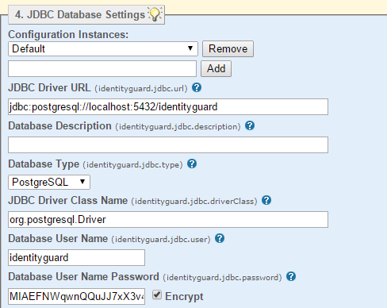

|
IdentityGuard Server 13.0 Administration Guide |
|
IdentityGuard Server 13.0 Administration Guide |
You can add a new database at any time, even if you already have database or directory repositories configured.
The first database you configure, whether during Entrust IdentityGuard installation or using this procedure, becomes the Default instance. The properties you set for the Default instance become the defaults for any subsequent database you add.
To add a new database repository
1. If a database is not already set up for Entrust IdentityGuard, load the Entrust IdentityGuard schema into your supported database and install the driver files on the Entrust IdentityGuard computer. For instructions, see the Entrust IdentityGuard Database Configuration Guide.
2. Place any JAR files required for the database into the following directories:
● Entrust IdentityGuard directory
– on Windows, <IG_HOME>\lib\db
The default location is C:\Program Files\Entrust\IdentityGuard\identityguard<version>\lib\db
– on Linux: $IG_HOME/lib/db
(Create the /db directory if it does not exist.)
The default location is /opt/entrust/identityguard<version>/lib/db/
● the application server common library location
– for Tomcat on Windows, this is CATALINA_HOME/lib
The default location is C:\Program Files\Entrust\IdentityGuard\apache-tomcat<version>\lib
– for Tomcat on Linux, this is $CATALINA_HOME/lib
The default location is /opt/entrust/apache-tomcat<version>/lib or /opt/entrust/apache-tomcat/lib/
3. Restart the Entrust IdentityGuard Server service before continuing with the next step.
4. Start the Entrust IdentityGuard Properties Editor. (See Log in or out of the Properties Editor.)
5. On the Table of Contents, click JDBC Database Settings.

6. Under Configuration Instances, do one of the following:
● To edit default settings for database repositories in your implementation, select Default.
● To configure settings that vary from the default, enter a configuration name in the empty field and click Add. The new database configuration instance name appears in the drop-down list.
7. Change the settings as needed for the database configuration instance. The only required setting is the JDBC Driver URL property. For details on this URL, see the Entrust IdentityGuard Database Configuration Guide.
Consider providing a unique name in the Database Description field. This will help you identify the configuration instance later, when you are working in the Administration interface.
Change other settings as required. If left empty, they use implied defaults. For an explanation of each property and their defaults, see JDBC Database Settings.
8. Make sure the user named in the Database User Name field has permission to access all entries in the new repository.
9. Enter the password for the user associated with the database configured in this instance.
10. For SQL WHERE Clause Escaping:
● for Oracle, MySQL and default installations of PostgreSQL, select False
● for all other databases, select True
11. For SQL TIMESTAMP Data Type:
● for Oracle, MySQL, and PostgreSQL, select True
● for DB2 and SQL Server, select False
12. For SQL INSERT Clause Requires SEQUENCE:
● for Oracle, select True
● for any other database, select False
13. For SQL Search Includes NOLOCK:
● for Microsoft SQL server, select True
● for any other database, select False
14. Change other settings as required. If left empty, they use implied defaults. For information about each property and its defaults, see JDBC Database Settings.
15. Click Validate & Save.
If the repository selection you make in the Card/User Repository Implementation Classes drop-down list of the Repository Settings pane includes a database, the default database you configure on the JDBC Database Settings pane applies to that repository.
If you also have LDAP repositories configured, and this is the first JDBC database, click Table of Contents.
16. Click Repository Settings.
17. From the Card/User Repository Implementation Classes drop-down list, select one of
● Database (Default) and Directory Server
● Directory Server (Default) and Database
● Custom (For this option, you specify your own custom class name.)
18. Click Validate & Save.